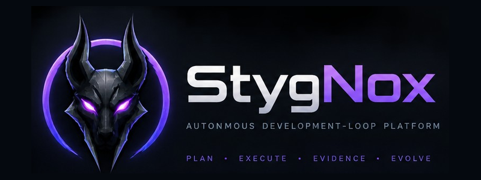

01
Plan
Turn intent into an inspectable, bounded execution contract before work begins.
StygNox coordinates a bounded development loop that plans, executes, captures evidence, stops for human authority when required and preserves deterministic recovery.

Autonomy is useful only when its boundaries, evidence and recovery semantics are explicit.
Turn intent into an inspectable, bounded execution contract before work begins.
Run work inside declared authority, scope and test policy.
Capture state, commands, diffs, gates and outcomes as durable operational evidence.
Carry learning forward without silently mutating previously approved contracts.
Pause exactly where execution needs operator authority, with the evidence needed to make the decision.
Preserve lineage and recovery semantics so a failed or retired plan never becomes ambiguous working-tree state.
Record who authorised what, what actually changed, and why a run stopped or continued.
Operational trust comes from inspectable state. StygNox keeps runtime status, authority, recovery and evidence visible rather than burying them behind a conversational interface.
$ stygnox status plan EX-READY-0042 state RUNNING step 4 / 9 authority GUARDED tests add-only recovery ARMED evidence 37 events → next: execute bounded implementation ✓ plan fingerprint verified ✓ recovery checkpoint verified
StygNox is designed around explicit boundaries. It can move quickly, but changes to authority, scope or execution contract remain visible and deliberate.
Move faster while preserving evidence, recoverability and human authority.